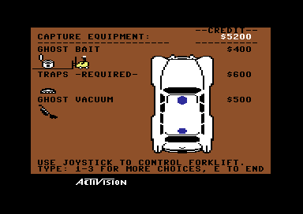
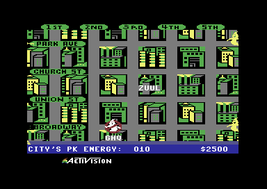
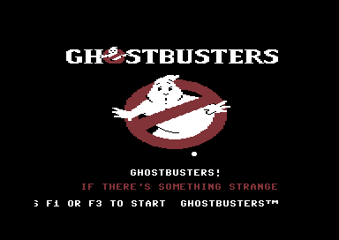

<meta charset="utf-8">
<meta name="viewport" content="width=device-width, initial-scale=1">
<title>{{title}}</title>
<link rel="preconnect" href="https://fonts.googleapis.com">
<link rel="stylesheet" href="https://fonts.googleapis.com/css2?family=Lato:wght@400;700;900&family=IBM+Plex+Mono:wght@400;500&display=swap">
<link rel="stylesheet" href="reference/ghostbusters-page.css">
<!-- tabs -->
<header class="hero">
  <p class="eyebrow">{{platform}} · {{year}} · {{publisher}}</p>
  <h1>{{title}}</h1>
  <p class="sub">David Crane’s adaptation of <i>Ghostbusters</i> puts you in charge of a ghost-catching business. Buying equipment and earning back your investment matter alongside the proton streams, while the film’s theme becomes a bouncing-ball sing-along.</p>
</header>
<main class="wrap">
<section id="game">
  <p class="fig">01 · The game</p>
  <h2 class="t">A franchise to keep afloat</h2>
  <p>The bank lends you $10,000. Before catching a ghost, you choose a <a href="gameplay.html#shop">car and load it with equipment</a>, steering a forklift across the shop to carry each purchase aboard. A cheaper car leaves more money for tools, but its limited carrying space restricts what you can take.<sup class="fn"><a href="about.html#src-1" title="The Commodore 64 manual">1</a></sup></p>
  <figure class="overview-shot"><figcaption>The capture-equipment shop. Traps take up space in the car, alongside optional purchases such as ghost bait and a vacuum for catching ghosts on the road.</figcaption></figure>
  <p>Once equipped, you move the Ghostbusters logo through the city’s streets, drawing a route to a haunted building. The journey becomes an overhead driving scene before you arrive outside to set a trap. Two men use their proton streams to herd a Slimer above it (<a href="gameplay.html#bust">how the catch works</a>). Bring the streams too close together and the backpacks short out, sending the team back to headquarters.</p>
  <p>Successful catches earn fees. Trips to headquarters empty the traps and restore the team, but the city keeps getting more dangerous. Its <a href="levels.html#pk">PK energy meter</a> measures supernatural activity, and wandering ghosts raise it when they reach the Temple of Zuul.</p>
  <figure class="overview-shot"><figcaption>The city map, with headquarters at the lower left and Zuul near the centre. The balance and PK energy meter track the business and the approaching crisis.</figcaption></figure>
  <p>The <a href="gameplay.html#marshmallow">Marshmallow Man</a> threatens both the city and your finances. Diverting him with bait earns a reward from the mayor; letting him flatten a building brings a damage bill. When the Keymaster and the Gatekeeper meet at <a href="gameplay.html#zuul">Zuul</a>, your balance decides whether the bank forecloses or the team gets a final attempt to close the portal.</p>
  <p class="overview-links"><a href="play.html">Play Ghostbusters</a><a href="levels.html">Explore the city map</a></p>
</section>

<section id="six-weeks">
  <p class="fig">02 · The development</p>
  <h2 class="t">The driving game behind Ghostbusters</h2>
  <p>Crane, who had previously created <i>Pitfall!</i> for the Atari 2600, already had a driving game called <i>Car Wars</i> in development. That unfinished project supplied Ghostbusters with its economy, car customisation, and driving sequence, according to his recollection quoted by Games That Weren’t.<sup class="fn"><a href="about.html#src-7" title="Games That Weren’t, Car Wars">7</a></sup></p>
  <p>Those inherited ideas give the film adaptation its shape. Choosing a vehicle affects how much equipment you can carry. Buying that equipment reduces the balance you must rebuild through ghost-catching fees. The business continues across games through an account number that lets you bring your money back.</p>
  <p><i>Retro Gamer</i> described Ghostbusters as having been turned around in six weeks. The economy, the car choice, and the driving scene came from <i>Car Wars</i>, not from the film. The ghost-catching scenes were what the film added.<sup class="fn"><a href="about.html#src-6" title="Retro Gamer, In the Chair with David Crane">6</a></sup></p>
</section>

<section id="makers">
  <p class="fig">03 · The makers</p>
  <h2 class="t">The people behind the presentation</h2>
  <p>The title screen credits David Crane alone. Later sources identify more contributors: MobyGames lists Adam Bellin for additional programming and Hilary Mills for graphics.<sup class="fn"><a href="about.html#src-3" title="MobyGames credits">3</a></sup> C64-Wiki and Wikipedia attribute the arrangement of Ray Parker Jr.’s theme song to Russell Lieblich.<sup class="fn"><a href="about.html#src-4" title="Wikipedia">4</a></sup><sup class="fn"><a href="about.html#src-5" title="C64-Wiki credits">5</a></sup></p>
  <p>The sing-along has its own production story. Wikipedia, citing <i>Retro Gamer</i>, says Crane passed the bouncing-ball sequence to Garry Kitchen and his game designers, who added it at the last minute.<sup class="fn"><a href="about.html#src-4" title="Wikipedia, citing Retro Gamer">4</a></sup></p>
  <figure class="overview-shot"><figcaption>The title screen turns the theme into a sing-along, with a ball following the lyrics. Pressing Space makes the computer call out the game’s name.</figcaption></figure>
  <p>Crane remembered writing an audio digitiser and playback program for the Commodore 64, although he could not clearly recall who supplied the voice. That uncertainty remains part of the credits.<sup class="fn"><a href="about.html#src-6" title="Retro Gamer, In the Chair with David Crane">6</a></sup> The speech itself can be heard on the <a href="music.html#speech">Music and speech page</a>, including a shorter version of the title call stored in the game but never used during play.</p>
</section>

<section id="reception">
  <p class="fig">04 · Reception</p>
  <h2 class="t">What the reviewers heard</h2>
  <p>Writing in <i>Personal Computer Games</i> in January 1985, Chris Anderson praised the presentation, particularly the music and speech. His judgment also carried a qualification: he thought the game’s success depended heavily on how well it recreated the film’s atmosphere.<sup class="fn"><a href="about.html#src-8" title="Personal Computer Games, transcribed by the Commodore Format Archive">8</a></sup></p>
  <p>The logo, the theme, and the spoken title call all arrive before the equipment shopping begins, which is where the film’s atmosphere is set.</p>
  <p><i>Your Commodore</i> also praised the programming and highlighted speech produced without extra hardware. The magazine attributed the effect to the sound chip’s filters; the program actually produces speech by rapidly changing its volume.<sup class="fn"><a href="about.html#src-9" title="Your Commodore, transcribed by the Commodore Format Archive">9</a></sup> The <a href="music.html#speech">speech player</a> shows how.</p>
  <span id="versions"></span>
  <p>The Commodore 64 version came first, followed by adaptations for other computers and consoles. In Britain, Ghostbusters topped the chart from January to March 1985.<sup class="fn"><a href="about.html#src-4" title="Wikipedia, release history and UK charts">4</a></sup></p>
</section>

<section id="explore">
  <p class="fig">05 · Inside the game</p>
  <h2 class="t">What the account number remembers</h2>
  <p>Ghostbusters lets a business survive the end of a game without saving a file. Its account number contains the balance, rounded down to hundreds of dollars, together with a check calculated from the player’s name. Entering the name and number brings that spending power into another franchise.</p>
  <p>The check also has weaknesses. Names made from the same letters share accounts, and the number reader accepts some unexpected characters. The <a href="gameplay.html#account">account-number demonstration</a> lets you make a number and see what the game accepts.</p>
  <p>Two details contradict common advice. A PK meter at 9,999 does not end the city phase: the <a href="levels.html#pk">Keymaster and Gatekeeper must meet at Zuul</a>. The bank also accepts a balance equal to your starting funds, despite the ending’s claim that you made more money.</p>
  <p><a href="discoveries.html">Explore the discoveries</a> or <a href="music.html">hear the theme and speech</a>.</p>
</section>
</main>
<footer style="margin:16px 0 0;padding:22px var(--gx) 0;border-top:1px solid #e0ded8;font-family:'IBM Plex Mono',ui-monospace,Menlo,monospace;font-size:12px;color:#80838a"><a href="https://github.com/gamesexplained/gamesexplained" aria-label="GitHub" style="display:inline-flex;align-items:center;justify-content:center;width:26px;height:26px;margin-left:8px;border:1px solid #e0ded8;border-radius:7px;background:#ffffff;color:#80838a;vertical-align:middle"><svg width="15" height="15" viewBox="0 0 24 24" fill="currentColor" aria-hidden="true"><path d="M12 .297c-6.63 0-12 5.373-12 12 0 5.303 3.438 9.8 8.205 11.385.6.113.82-.258.82-.577 0-.285-.01-1.04-.015-2.04-3.338.724-4.042-1.61-4.042-1.61C4.422 18.07 3.633 17.7 3.633 17.7c-1.087-.744.084-.729.084-.729 1.205.084 1.838 1.236 1.838 1.236 1.07 1.835 2.809 1.305 3.495.998.108-.776.417-1.305.76-1.605-2.665-.3-5.466-1.332-5.466-5.93 0-1.31.465-2.38 1.235-3.22-.135-.303-.54-1.523.105-3.176 0 0 1.005-.322 3.3 1.23.96-.267 1.98-.399 3-.405 1.02.006 2.04.138 3 .405 2.28-1.552 3.285-1.23 3.285-1.23.645 1.653.24 2.873.12 3.176.765.84 1.23 1.91 1.23 3.22 0 4.61-2.805 5.625-5.475 5.92.42.36.81 1.096.81 2.22 0 1.606-.015 2.896-.015 3.286 0 .315.21.69.825.57C20.565 22.092 24 17.592 24 12.297c0-6.627-5.373-12-12-12"/></svg></a><a href="https://discord.gg/3V9GWyRDWV" aria-label="Discord" style="display:inline-flex;align-items:center;justify-content:center;width:26px;height:26px;margin-left:8px;border:1px solid #e0ded8;border-radius:7px;background:#ffffff;color:#80838a;vertical-align:middle"><svg width="15" height="15" viewBox="0 0 24 24" fill="currentColor" aria-hidden="true"><path d="M20.317 4.3698a19.7913 19.7913 0 00-4.8851-1.5152.0741.0741 0 00-.0785.0371c-.211.3753-.4447.8648-.6083 1.2495-1.8447-.2762-3.68-.2762-5.4868 0-.1636-.3933-.4058-.8742-.6177-1.2495a.077.077 0 00-.0785-.037 19.7363 19.7363 0 00-4.8852 1.515.0699.0699 0 00-.0321.0277C.5334 9.0458-.319 13.5799.0992 18.0578a.0824.0824 0 00.0312.0561c2.0528 1.5076 4.0413 2.4228 5.9929 3.0294a.0777.0777 0 00.0842-.0276c.4616-.6304.8731-1.2952 1.226-1.9942a.076.076 0 00-.0416-.1057c-.6528-.2476-1.2743-.5495-1.8722-.8923a.077.077 0 01-.0076-.1277c.1258-.0943.2517-.1923.3718-.2914a.0743.0743 0 01.0776-.0105c3.9278 1.7933 8.18 1.7933 12.0614 0a.0739.0739 0 01.0785.0095c.1202.099.246.1981.3728.2924a.077.077 0 01-.0066.1276 12.2986 12.2986 0 01-1.873.8914.0766.0766 0 00-.0407.1067c.3604.698.7719 1.3628 1.225 1.9932a.076.076 0 00.0842.0286c1.961-.6067 3.9495-1.5219 6.0023-3.0294a.077.077 0 00.0313-.0552c.5004-5.177-.8382-9.6739-3.5485-13.6604a.061.061 0 00-.0312-.0286zM8.02 15.3312c-1.1825 0-2.1569-1.0857-2.1569-2.419 0-1.3332.9555-2.4189 2.157-2.4189 1.2108 0 2.1757 1.0952 2.1568 2.419 0 1.3332-.9555 2.4189-2.1569 2.4189zm7.9748 0c-1.1825 0-2.1569-1.0857-2.1569-2.419 0-1.3332.9554-2.4189 2.1569-2.4189 1.2108 0 2.1757 1.0952 2.1568 2.419 0 1.3332-.946 2.4189-2.1568 2.4189Z"/></svg></a><br>© Games Explained contributors. Write-ups, facts and symbol maps are available under <a href="https://creativecommons.org/licenses/by-sa/4.0/" style="color:#1f5fa8;text-decoration:none">CC BY-SA 4.0</a>; code under <a href="https://opensource.org/licenses/MIT" style="color:#1f5fa8;text-decoration:none">MIT</a></footer>
